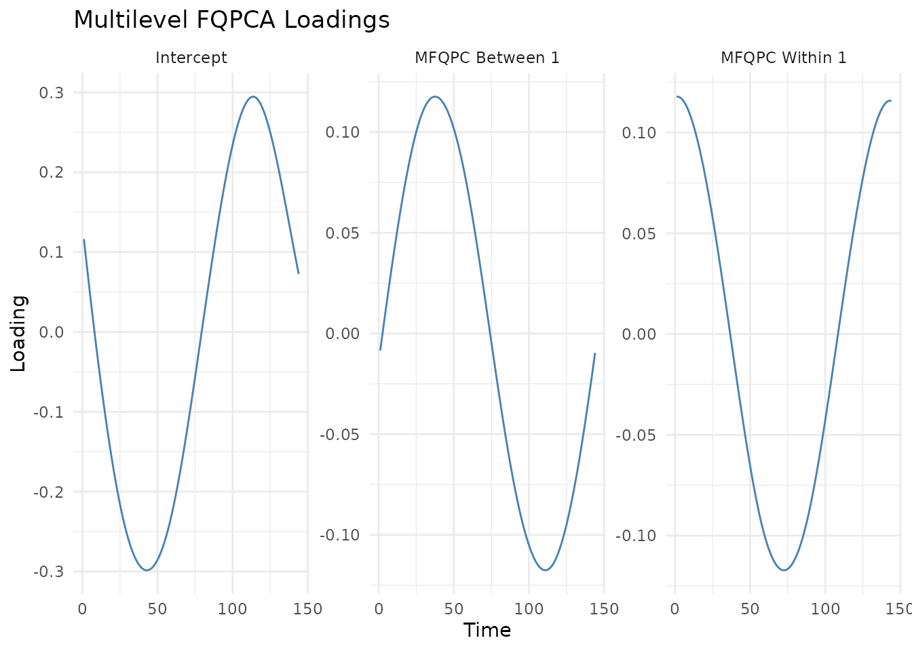

Multilevel Functional Quantile Principal Component Analysis (MFQPCA) is designed to handle functional data with a hierarchical or repeated-measures structure (e.g. multiple days of activity tracking curves collected per subject).
MFQPCA decomposes the functional variation into two distinct levels:
- Between-subject level: Captures differences between subjects (average subject-specific behavior).
- Within-subject level: Captures day-to-day or measurement-to-measurement variation within the same subject.
This vignette covers how to fit models, predict new scores, plot
results, and tune hyperparameters using the FunQ
package.
Let’s load the required packages:
1. Generating Multilevel Synthetic Data
We generate a repeated-measures dataset where curves are collected from individuals (10 repeated measurements per individual).
set.seed(5)
n.individuals <- 20
n.repeated <- 10
n.time <- 144
N <- n.repeated * n.individuals
group <- rep(seq_len(n.individuals), each = n.repeated)
Y.axis <- seq(0, 2*pi, length.out = n.time)
# Define between-subject and within-subject PCs
pc.between <- sin(Y.axis)
pc.within <- cos(Y.axis)
# Generate scores
scores.between <- rnorm(n.individuals)
scores.between.full <- scores.between[match(group, unique(group))]
scores.within <- rnorm(N)
# Construct data
Y <- scores.between.full %*% t(pc.between) + scores.within %*% t(pc.within)
# Add noise and some random missing observations
Y <- Y + matrix(rnorm(N * n.time, mean=0, sd=0.3), nrow = N)
Y[sample(N * n.time, as.integer(0.2 * N * n.time))] <- NA2. Model Fitting
We apply mfqpca() at the median
()
with 1 between-subject component and 1 within-subject component:
# Fit Multilevel FQPCA
model_mfqpca <- mfqpca(
data = Y,
group = group,
npc.between = 1,
npc.within = 1,
quantile.value = 0.5,
periodic = FALSE,
splines.df = 8,
seed = 5,
verbose = FALSE
)
# Access components
intercept <- model_mfqpca$intercept
loadings_between <- model_mfqpca$loadings.between
loadings_within <- model_mfqpca$loadings.within
scores_between <- model_mfqpca$scores.between
scores_within <- model_mfqpca$scores.withinFitted Values and Predictions
To reconstruct curves using the multilevel components, use the
generic fitted() method:
# Reconstruct all curves
Y.fitted <- fitted(model_mfqpca)To predict score components for new subjects, we use
predict(). When predicting for new subjects, we need to
supply the new group membership and their functional data:
# Create dummy new subject with 5 repeated measurements
Y.new <- Y[1:5, ]
new_group <- rep("new_subject_1", 5)
# Predict multilevel scores
new_scores <- predict(
model_mfqpca,
newdata = Y.new,
newdata.group = new_group
)
# New predicted scores
new_scores$scores.between
#> [,1]
#> [1,] -4.838801
head(new_scores$scores.within)
#> [,1]
#> [1,] 6.751913
#> [2,] 6.698069
#> [3,] 11.309779
#> [4,] 5.003713
#> [5,] 6.1281553. Visualizing Between and Within Loadings
You can visualize both the between-subject and within-subject loading
functions using the generic plot() method:
# Plot loading functions
plot(model_mfqpca) +
theme_minimal() +
ggtitle("Multilevel FQPCA Loadings")
4. Tuning splines.df (Cross-Validation)
We can optimize the degrees of freedom parameter
(splines.df) using k-fold cross-validation specifically
adapted for multilevel structures.
df_grid <- c(5, 8, 10)
# Run CV for multilevel degrees of freedom
cv_mfqpca <- mfqpca_cv_df(
data = Y,
group = group,
splines.df.grid = df_grid,
npc.between = 1,
npc.within = 1,
n.folds = 2,
criteria = "points",
periodic = FALSE,
seed = 5,
verbose.cv = FALSE
)
# Error matrix
cv_mfqpca$error.matrix
#> Fold 1 Fold 2
#> [1,] 0.1259078 0.1264731
#> [2,] 0.1236930 0.1238107
#> [3,] 0.1239126 0.1240724
# Find the best df
optimal_df <- df_grid[which.min(rowMeans(cv_mfqpca$error.matrix))]
message("Optimal Multilevel Degrees of Freedom: ", optimal_df)
#> Optimal Multilevel Degrees of Freedom: 8References
- Álvaro Méndez-Civieta, Ying Wei, Jeff Goldsmith. (2026). Multilevel functional quantile principal component analysis. Biostatistics, kxag017. DOI: 10.1093/biostatistics/kxag017